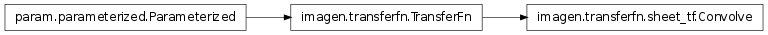

A family of transfer functions that are aware of sheet coordinate systems.
The transfer functions in this file are allowed to make used of Imagen patterns and are to be supplied with an appropriate SheetCoordinateSystem object via the initialize method.
Bases: imagen.transferfn.TransferFn
Transfer function that convolves the array data with the supplied kernel pattern.
The bounds and densities of the supplied kernel pattern do not affect the convolution operation. The spatial scale of the convolution is determined by the ‘size’ parameter of the kernel. The resulting convolution is applied of a spatial scale relative to the overall size of the input, as expressed in sheetcoordinates.
param Parameter norm_value (constant=False, default=None, instantiate=False, pickle_default_value=True, precedence=None, readonly=False)